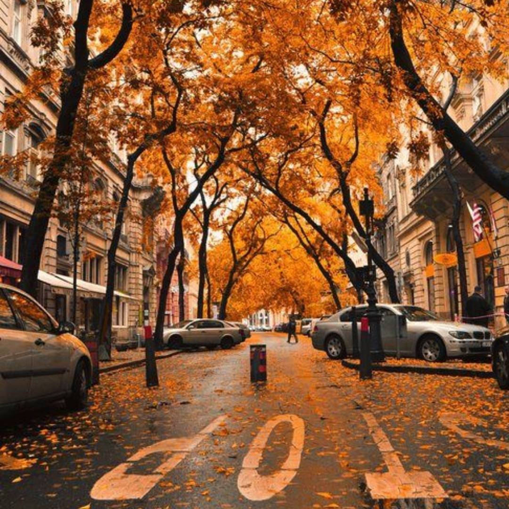

Fall Guide to PWN
There are some exciting things to do in the Pacfic Northwest during the season of Fall
Here's a list things to do during the fall season
Going to a Pumpkin Patch!
Visting State Fairs or any Fairs that are going on right now
Hitting up your local coffee shop and trying some fall themed drinks
(I personally suggest the Salted Caramel Mocha from StarBucks)
Visting a Dog Shelter and potentinally adopting a dog
